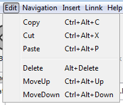
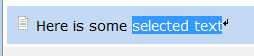
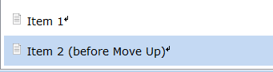
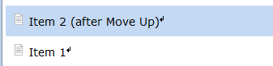

The edit menu offers a number of operations to edit documents.

Copy, cut, paste and delete can be used to copy, cut, paste and delete items in a document. Items are the objects, which are highlighted in light blue once they are selected (for instance a text or a picture). Importantly, these operations do not work on text, which might be selected in a text item. Text can still be copied, pasted and cut using the keyboard shortcuts Ctrl + C, X, V or Mac Key + C, X, V respectively.

The operations Move Up and Move Down can be used to change the order of items. Following and example of the Move Up operation. Move Down works respectively.

